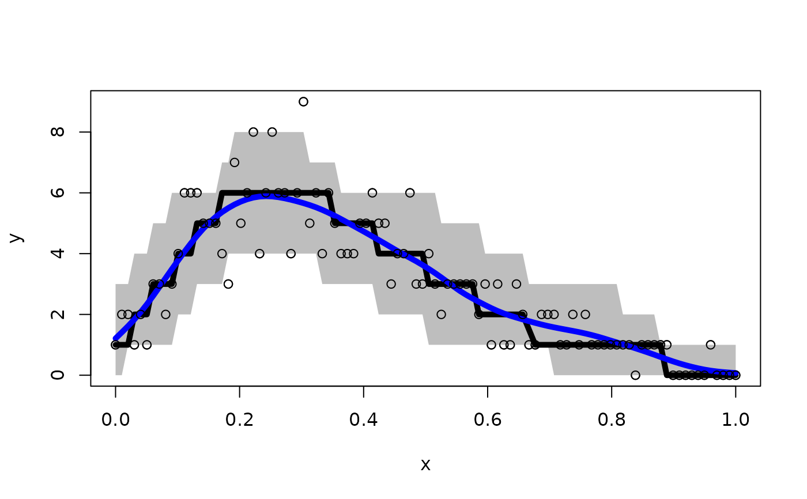

Posterior and predictive inference for Bayesian STAR splines
Source:R/STAR_Bayesian.R
spline_star.RdCompute samples from the posterior and predictive distributions of a STAR spline regression model using either a Gibbs sampling approach or exact Monte Carlo sampling. Cubic B-splines are used with a prior that penalizes roughness.
Usage
spline_star(
y,
x = NULL,
x_test = NULL,
transformation = "bnp",
y_max = Inf,
psi = NULL,
nbasis = NULL,
use_MCMC = TRUE,
nsave = 1000,
nburn = 1000,
nskip = 0,
alpha = 1,
F0 = NULL,
verbose = TRUE
)Arguments
- y
n x 1vector of observed counts- x
n x 1vector of observation points; if NULL, assume equally-spaced on [0,1]- x_test
n_test x 1vector of testing points; default isx- transformation
transformation to use for the latent data; must be one of
"identity" (identity transformation)
"log" (log transformation)
"sqrt" (square root transformation)
"np" (nonparametric transformation estimated from empirical CDF)
"pois" (transformation for moment-matched marginal Poisson CDF)
"neg-bin" (transformation for moment-matched marginal Negative Binomial CDF)
"box-cox" (box-cox transformation with learned parameter)
"bnp" (Bayesian nonparametric transformation)
- y_max
a fixed and known upper bound for all observations; default is
Inf- psi
prior variance (1/smoothing parameter); if NULL, sample this parameter
- nbasis
number of spline basis functions; if NULL, use the default from
spikeSlabGAM::sm- use_MCMC
logical; whether to run Gibbs sampler or Monte Carlo (default is TRUE)
- nsave
number of MC(MC) iterations to save
- nburn
number of MCMC iterations to discard
- nskip
number of MCMC iterations to skip between saving iterations, i.e., save every (nskip + 1)th draw
- alpha
prior precision for the Dirichlet Process prior ('bnp' transformation only); default is one
- F0
function to evaluate the base measure CDF supported on
{0,...,y_max}('bnp' transformation only)- verbose
logical; if TRUE, print time remaining
Value
a list with the following elements:
coefficients: the posterior mean of the spline coefficientsfitted.valuesthe posterior predictive mean at the test pointsx_testpost.beta:nsave x psamples from the posterior distribution of the regression coefficientspost.pred:nsave x n_testsamples from the posterior predictive distribution atx_testpost.psi:nsavedraws from the prior variance (inverse smoothing)psimarg_like: the marginal likelihood (only ifuse_MCMC=FALSE; otherwise NULL)
Details
STAR defines a count-valued probability model by (1) specifying a Gaussian model for continuous *latent* data and (2) connecting the latent data to the observed data via a *transformation and rounding* operation. Here, the continuous latent data model is a spline regression.
There are several options for the transformation. First, the transformation can belong to the *Box-Cox* family, which includes the known transformations 'identity', 'log', and 'sqrt', as well as a version in which the Box-Cox parameter is inferred within the MCMC sampler ('box-cox').
Second, the transformation can be estimated (before model fitting) using the
the data y. Options in this case include the empirical cumulative
distribution function (ECDF), which is fully nonparametric ('np'), or the parametric
alternatives based on Poisson ('pois') or Negative-Binomial ('neg-bin')
distributions. For the parametric distributions, the parameters of the distribution
are estimated using moments (means and variances) of y.
Lastly, the transformation can be modeled nonparametrically using Bayesian nonparametrics via Dirichlet processes ('bnp'). The 'bnp' option is the default because it is highly flexible, accounts for uncertainty when the transformation is unknown, and is computationally efficient.
The Monte Carlo sampler (use_MCMC=FALSE) produces direct, joint draws
from the posterior predictive distribution. When n is
moderate to large, MCMC sampling (use_MCMC=TRUE) is much faster and more convenient.
Examples
# Simulate some data:
n = 100
x = seq(0,1, length.out = n)
y = round_floor(exp(1 + rnorm(n)/4 + poly(x, 4)%*%rnorm(n=4, sd = 4:1)))
# Sample from the predictive distribution of a STAR spline model:
fit = spline_star(y = y, x = x)
#> [1] "1 sec remaining"
#> [1] "Total time: 1 seconds"
# Compute 90% prediction intervals:
pi_y = t(apply(fit$post.pred, 2, quantile, c(0.05, .95)))
# Plot the results: intervals, median, and smoothed mean
plot(x, y, ylim = range(pi_y, y))
polygon(c(x, rev(x)),c(pi_y[,2], rev(pi_y[,1])),col='gray', border=NA)
lines(x, apply(fit$post.pred, 2, median), lwd=5, col ='black')
lines(x, smooth.spline(x, apply(fit$post.pred, 2, mean))$y, lwd=5, col='blue')
lines(x, y, type='p')
